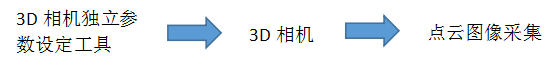
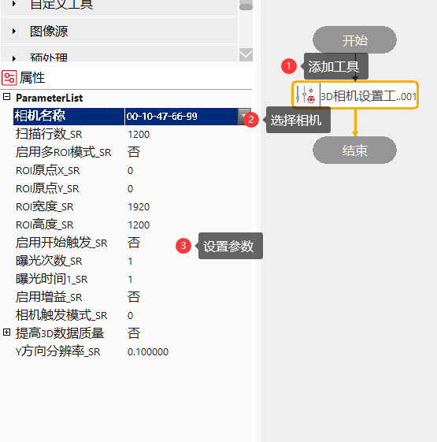
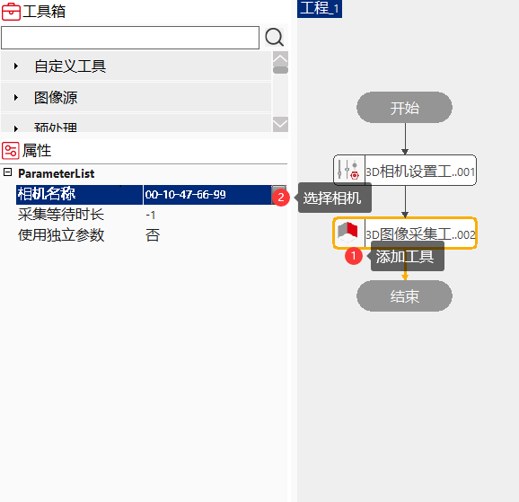

Công cụ cài đặt camera 3D có thể cài đặt các tham số thường dùng liên quan đến quá trình thu nhận của camera 3D đã chọn, ví dụ：phơi sáng、ROI hiệu dụng của camera、số dòng ảnh thu nhận và các tham số khác.
Hình dưới đây là quy trình sử dụng thông thường của công cụ cài đặt camera 3D：

Trong quá trình thu nhận ảnh 3D, với cùng một camera, khi thu nhận ảnh ở các vị trí khác nhau, có thể cần sử dụng các tham số thu nhận camera khác nhau để thể hiện các đặc trưng khác nhau của sản phẩm, ví dụ：phơi sáng、ROI hiệu dụng của camera、số dòng ảnh thu nhận、có sử dụng tín hiệu trigger bắt đầu chụp hay không và các tham số camera có thể chỉnh sửa khác.
Công cụ cài đặt camera 3D lấy các tham số thường dùng của camera 3D đã chọn và so sánh với các tham số trong thanh thuộc tính của công cụ, sau đó ghi các tham số thuộc tính không giống nhau vào camera thông qua giao diện API cài đặt camera 3D.


| Mô tả hiện tượng | Cách xử lý |
|---|---|
| Sau khi cài đặt xong, lưu project rồi mở lại project, thanh thuộc tính không hiển thị tham số, hoặc chỉ hiển thị SN camera | Kiểm tra kết nối camera bất thường, kết nối lại camera |
| Công cụ thực thi thất bại | Kiểm tra tham số có hợp lý không、camera có bị mất kết nối không、camera có ở trạng thái bình thường không、đường dẫn file tham số có tồn tại không |
| Tên tham số | Mô tả tham số |
|---|---|
| Tên camera | Số SN camera đầu vào |
| Số dòng quét_SR | Số dòng kết thúc thu nhận của công cụ thu nhận camera 3D |
| Bật chế độ multi-ROI_SR | Có：hiển thị nhập file multi-ROI_SR；Không：hiển thị tham số cài đặt ROI； |
| Nhập file multi-ROI_SR | Chọn đường dẫn file multi-ROI |
| Gốc X ROI thu nhận_SR | Giá trị X của gốc góc trên bên trái ROI trong phạm vi thu nhận camera |
| Gốc Y ROI thu nhận_SR | Giá trị Y của gốc góc trên bên trái ROI trong phạm vi thu nhận camera |
| Chiều rộng ROI thu nhận_SR | Chiều rộng ROI trong phạm vi thu nhận hiệu dụng của camera |
| Chiều cao ROI thu nhận_SR | Chiều cao ROI trong phạm vi thu nhận hiệu dụng của camera |
| Bật trigger bắt đầu_SR | Bật/tắt điều kiện trigger bắt đầu |
| Nguồn trigger bắt đầu_SR | 0-Input0; 1-Input1; 2-Input2; 3-Input3; -1-không có đầu vào trigger |
| Sườn trigger bắt đầu_SR | 0-sườn lên; 1-sườn xuống; 2-bất kỳ; |
| Số lần phơi sáng_SR | Số lần phơi sáng của camera, lớn hơn hoặc bằng 1, nhỏ hơn hoặc bằng 4 |
| Thời gian phơi sáng 1_SR | Giá trị phơi sáng lần thứ nhất |
| Thời gian phơi sáng 2_SR | Giá trị phơi sáng lần thứ hai |
| Thời gian phơi sáng 3_SR | Giá trị phơi sáng lần thứ ba |
| Thời gian phơi sáng 4_SR | Giá trị phơi sáng lần thứ tư |
| Gain camera_SR | Gain camera |
| Chế độ trigger camera_SR | 0-chế độ tự do；1-trigger nội；2-trigger ngoài |
| Tần số trigger nội_SR | Tần số trigger nội |
| Nguồn trigger ngoài_SR | 0-Input0; 1-Input1; 2-chế độ tổ hợp Input; 4-encoder |
| Cài đặt sườn trigger ngoài_SR | 0-sườn lên; 1-sườn xuống; 2-bất kỳ |
| Chia tần trigger ngoài_SR | Vi sai trigger dữ liệu |
| Độ trễ trigger ngoài_SR | Độ trễ trigger dữ liệu |
| Độ phân giải hướng Y_SR | Khoảng cách quét của camera，đơn vị：mm |
| Chế độ làm việc_MP | 0-nhanh；1-tiêu chuẩn；2-chính xác；3-siêu chính xác； |
| Chế độ trigger_MP | 0-trigger phần mềm；1-trigger liên tục nội bộ；2-Input0；3-Input1 |
| Thời gian phơi sáng_MP | Phạm vi：[500,50000],đơn vị：us |
| Số lần chiếu sáng_MP | Cài đặt số lần chiếu sáng bắt đầu từ 1，phạm vi：[1,3] |
| Độ sáng chiếu sáng 1_MP | Phạm vi：[0,255] |
| Độ sáng chiếu sáng 2_MP | Phạm vi：[0,255] |
| Độ sáng chiếu sáng 3_MP | Phạm vi：[0,255] |
| Mã cấu hình tham số_SS | Phạm vi：[0,63] |
| Số dòng quét_SS | Số dòng kết thúc thu nhận của công cụ thu nhận camera 3D，phạm vi：[50,15000] |
| Độ phân giải hướng Y_SS | Khoảng cách quét của camera，đơn vị：mm |
| Chế độ trigger_LC | 0-trigger phần mềm；1-trigger liên tục；2-Input0; |
| Bật ROI_LC | |
| Gốc X ROI_LC | ROIX vùng thu nhận hiệu dụng của camera |
| Gốc Y ROI_LC | ROIY vùng thu nhận hiệu dụng của camera |
| Chiều rộng ROI_LC | Chiều rộng ROI vùng thu nhận hiệu dụng của camera |
| Chiều cao ROI_LC | Chiều cao ROI vùng thu nhận hiệu dụng của camera |
| Thời gian phơi sáng_LC | Phạm vi：[8333,100000] |
| Số lần chiếu sáng_LC | Cài đặt số lần chiếu sáng bắt đầu từ 1，phạm vi：[1,3] |
| Độ sáng chiếu sáng 1_LC | Phạm vi：[0,255] |
| Độ sáng chiếu sáng 2_LC | Phạm vi：[0,255] |
| Độ sáng chiếu sáng 3_LC | Phạm vi：[0,255] |
| Độ sáng chiếu sáng 4_LC | Phạm vi：[0,255] |
| Độ sáng chiếu sáng 5_LC | Phạm vi：[0,255] |
| Độ sáng chiếu sáng 6_LC | Phạm vi：[0,255] |
| Độ sáng chiếu sáng 7_LC | Phạm vi：[0,255] |
| Độ sáng chiếu sáng 8_LC | Phạm vi：[0,255] |
| Số dòng quét_FP | Số dòng kết thúc thu nhận của công cụ thu nhận |
| ROI_FP | ROI |
| Bật AGC_FP | Sau khi bật, thực hiện chức năng phơi sáng tự động |
| Phơi sáng_FP | Phạm vi giá trị[0, 100000]，đơn vị: us |
| Gain_FP | Phạm vi giá trị[1, 100000] |
| Chế độ trigger_FP | trigger nội、trigger ngoài |
| Tham số trigger ngoài_FP | Nguồn trigger、chia tần |
| Tần số trigger nội_FP | Phạm vi giá trị[0, 100000] |
| Loại vật liệu_FP | Không trong suốt、bề mặt gương、trong suốt và tùy chỉnh |
| Độ nhạy_FP | Độ chính xác tốt nhất、 độ nhạy tốt nhất |
| Độ dày tối thiểu_FP | Phạm vi giá trị[0, 100000] |
| Tham số vật liệu_FP | Các tham số như ngưỡng đỉnh |
| Phương thức xuất bề mặt_FP | Phương thức sắp xếp、 số lớp bề mặt xuất |
| Độ phân giải hướng Y_FP | Phạm vi giá trị[0, 100000] |
| Tên recipe_LMI | Tên recipe |
| Mã cấu hình tham số_KE | Mã cấu hình tham số，các mã khác nhau tương ứng với cấu hình tham số khác nhau，phạm vi giá trị[0 , 15] |
| User Set_HK | Số User Set，phạm vi giá trị[0 , 10]，0 là User Set mặc định |
| User Set_LZ | Số User Set，phạm vi giá trị[0 , 10]，0 là User Set mặc định |
| Đọc tham số_MPS | Chọn Có：nhập tham số từ file tham số vào camera；Chọn Không：lưu tham số hiện tại thành file tham số |
| Đường dẫn tải file tham số_MPS | Đường dẫn tải file tham số |
| Tên file lưu tham số_MPS | Tên file dùng để lưu tham số |
| Đường dẫn lưu file tham số_MPS | Đường dẫn xuất file tham số |
| Cho phép ROI_MPS | Cho phép ROI |
| Gốc X ROI_MPS | Phạm vi giá trị[0, 255] |
| Gốc Y ROI_MPS | Phạm vi giá trị[0, 255] |
| Chiều rộng ROI_MPS | Phạm vi giá trị[0, 255] |
| Chiều cao ROI_MPS | Phạm vi giá trị[0, 255] |
| Gain người dùng_MPS | Phạm vi giá trị[0, 5] |
| Số lần phơi sáng_MPS | Phạm vi giá trị[1, 3] |
| Phơi sáng 1_MPS | Phạm vi giá trị[0.1, 100] |
| Phơi sáng 2_MPS | Phạm vi giá trị[0.1, 100] |
| Phơi sáng 3_MPS | Phạm vi giá trị[0.1, 100] |
| Phơi sáng 2D_MPS | Phạm vi giá trị[0.1, 100] |
| Tên tham số | Mô tả tham số |
|---|---|
| Kết quả thực thi | Kết quả thực thi |
| Thời gian thực thi | Thời gian thực thi |
Không có